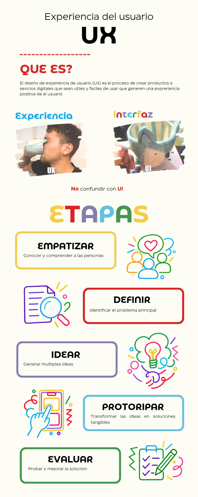
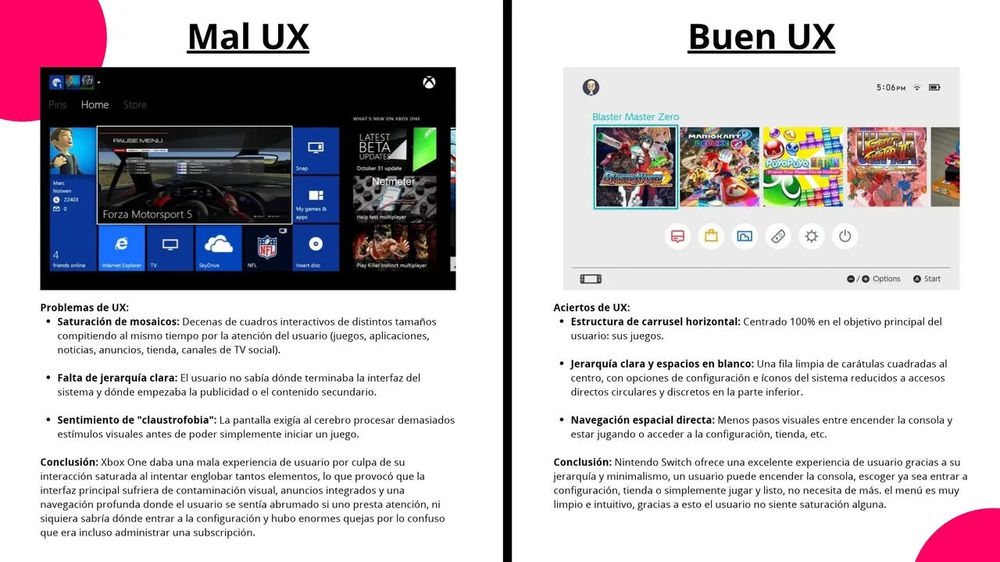

EXPERIENCIA DE USUARIO
La Experiencia de Usuario (UX) abarca todos los aspectos de la interacción del usuario final con la empresa, sus servicios y sus productos. El objetivo principal es diseñar soluciones intuitivas, accesibles y eficientes. Es decir, son las sensaciones que el usuario experimenta al momento de interactuar con el producto, es importante no confundir UX con UI (Interfaz de Usuario), aunque van de la mano, la UX busca resolver problemas y necesidades para el usuario, la UI se centra en el apartado más estético.
En este recurso audiovisual se analizan los principios fundamentales que rigen la percepción del usuario, destacando la importancia de reducir la carga cognitiva durante la navegación.
BASES DE LA EXPERIENCIA DE USUARIO
En la siguiente infografía te presentamos un resumen de las bases fundamentales de la UX, en la cual nuevamente se te presenta la diferencia entre la UX y UI de una forma sencilla.

SUB TEMA 1: ARQUITECTURA E INTERACCIÓN
El diseño de interacción y la arquitectura de la información constituyen el pilar práctico para estructurar interfaces claras, accesibles y navegables, en el siguiente ejemplo te explicamos porqué se genera una mala UX, así como recalcar la importancia de empatizar con el usuario y sus necesidades para no caer en el error de una interfaz saturada que provoca una experiencia negativa.
